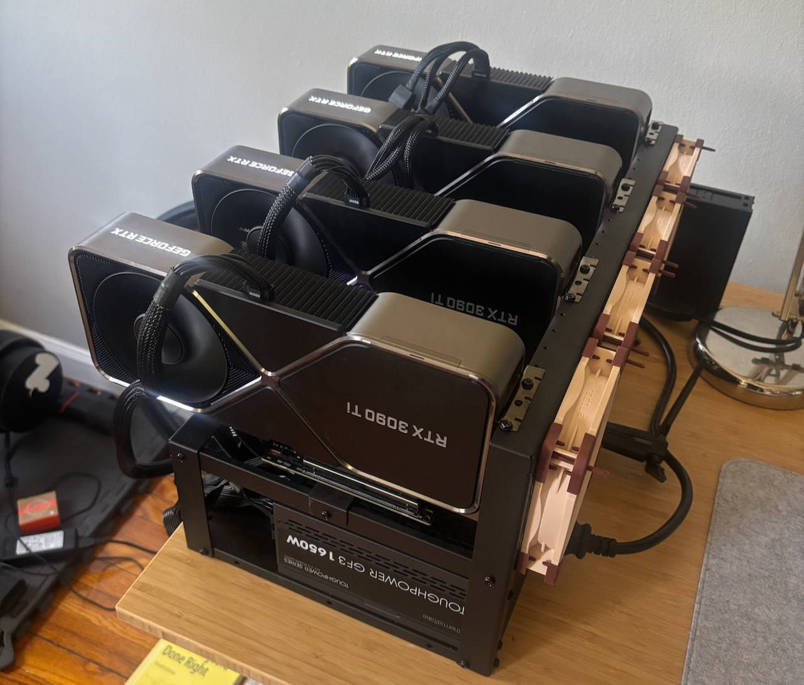
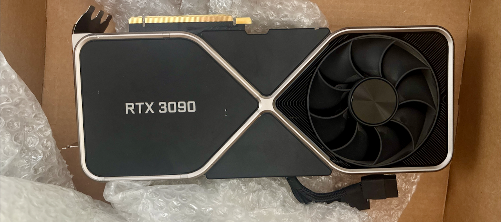
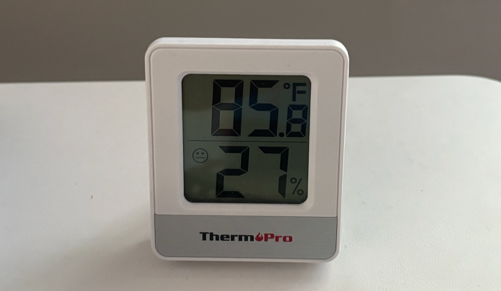

local compute
Building a 1-Outlet, 4-GPU Workstation
As a grad student, the one thing I desperately wanted was a GPU workstation. As a gainfully employed adult I can finally make that happen.
I have spent the past few months piecemeal building a multi-GPU workstation, ensuring it could run on a single US wall outlet. This rig allowed me to train some DETR models on CommonForms, a 1.3B param VLM on CommonForms, and to OCR the first million pages of laws for the LOCUS-v1 dataset.
The full constraints for the build were:
- it must run on a single, standard US wall outlet – 15A, 120V; this one is non-negotiable, I rent an apartment and cannot modify the wiring or add a new high power circuit;
- it must not be a nuisance; I don’t live alone, so it can’t be too loud and/or hot;
- it must fit within a reasonable budget; we may have different definitions of reasonable, and I’ll detail the costs later on. I could have built a much more impressive rig subject to the first two constraints for $60k, but that falls outside of my definition of reasonable; and
- it should have enough VRAM and speed to comfortably SFT and RL good vision language models; this is the whole reason I’m doing this, after all.

The Plan
My plan for this was simple: buy a server motherboard with enough PCIe x16 slots, a CPU with enough PCIe lanes, as much cheap DDR4 RAM as I could load into it, a bunch of cheap SSDs. Then power-limit the GPUs to a reasonable wattage, and go on my merry way running experiments.
Getting Punched in the Face
Unfortunately, Mike Tyson is right. While trying to build my workstation, I had to change plans a few times.
A Global Compute Crunch
If you know anything about the price of computer parts from the last year, you would know what happened to that plan. RAM quintupled in price, SSDs tripled, and used GPUs skyrocketed.
Buying used, cheap server parts was no longer an option. It took a lot more time and patience to find decent prices on components, trawling eBay, r/homelabsales, and r/hardwareswap. It became really hard to determine what was a good price for a component, so I had to resort to thinking about prices in terms of the Secretary Problem. Given the most recent sales price, and the upper limit of what I was willing to pay, was this a good price?
Taking Risks on Parts
GPU scams on eBay are so interesting to me, because the account “earringprincess” who has 2 reviews that both say “great earrings” is selling an 8xH100 node at 90% less than legitimate sellers.
— Joe Barrow (@barrowjoseph) March 11, 2026
Is anyone really dropping $20k without, like, basic due diligence?
Pretty much every part of this build is a secondhand part, save the first 3090 Ti. Secondhand parts come with unique risks. Is this drive shot? Does the GPU work? Is the whole account a scam?
I was pretty fortunate here, though once I ordered a 3090 Ti and received a 3090. The seller was very responsive, and it resolved with me getting a refund. But the risk is part of the game.

Power-Limiting is Not What it Seems
If you want to run off of a single outlet, power-limiting is your friend.
Unfortunately, it’s a bad friend, and a liar no less.
Running nvidia-smi -pl 250 does not set a hard cap at 250W, it sets a cap at an average of 250W over a millisecond period.
Your GPUs can have transient spikes within that millisecond.
Which, if they line up, can trigger your PSU’s overcurrent protection (OCP).
To avoid this, you need to limit clock speeds, not just power-limit.
Something like nvidia-smi -lgc 210,1500 can avoid triggering OCP.
My Setup
I ended up going with the following:
- Motherboard ASRock Rack ROMED8-2t; from all of my research this seems to be a pretty popular choice for home GPU clusters. A lot of people on r/localllama who do multi-3090 setups use it, I think the tinybox red might use it, and James Betker (nonint) used it for his clusters. People complain about issues like being unable to update the firmware. Thus far, I have not tried. My only complaint is that not all error codes are documented in the manual, so if something goes mildly wrong you are on your own to debug. It has a whopping 7 16x PCIe slots, meaning it’s expandable far beyond 4GPUs without bifurcation!
- CPU Epyc 7532; these are currently quite cheap on eBay, and give you 32 cores/64 threads. If you can efficiently parallelize tasks, that’s… not bad. Even better, you get 128 PCIe lanes, enough to run 7 GPUs at 16x + some NVMe drives. Note that the TDP is 200W, though, so you’ll have to take that into account for your power consumption planning.
- PSU Thermaltake 1650; this is just about the biggest PSU you can get for a US outlet. US outlets have a max of 1800W (15V*120A), but realistically a 1440W max (80%). You don’t want a 1400W PSU for many reasons: you don’t get 100% efficiency out of a PSU, running a PSU at or near its max is noisy and shortens its life, and the closer you run it to its max the less efficient you get. PSUs have efficiency curves.
- RAM DDR4 ECC; I can’t tell you what RAM to buy. However, you will need ECC RDIMMs or ECC LRDIMMs. (ECC = Error Correcting Codes). There are preferred SKUs for each motherboard, I found the cheapest matching SKU I could on eBay. I ended up going with 4x 64GB sticks for 256GB total. This is far more than enough, and I could still upgrade to 512GB in the future if RAM prices ever come back down to reality.
- There are considerations around memory speed and channels to consider. These are mostly only important if you’re using ZeRO3 to finetune larger models as it offloads gradients into RAM via the CPU, so you’re limited by the speed of the RAM for stores and loads.
- GPUs 4x power-limited 3090Ti; tbh, I’d advise you to go for 3090’s over 3090Ti’s (I’ll explain later), but I was really fortunate to pick up the first 2 for quite cheap and didn’t want to mix GPU types. Each 3090Ti has a TDP of 450W, so obviously sounds like I’m out of luck (450W*4=1800W). However, you can power-limit them using nvidia-smi or even disable some GPUs altogether in software (I published some helper scripts: https://github.com/jbarrow/gpu-management)
- Case Cheapo Mining Chassis; the less said the better. I went for a 6 GPU chassis because it has a much smaller footprint than a 8x GPU chassis and is much shorter than a 12x GPU chassis.
Avoiding Divorce
Perhaps the most important advice I can give you, if you choose to embark on a similar journey, is to be mindful of the people you live with. If your hobby is an imposition, the onus is on you to not be a dick. A workstation like this is intrusive, as it’s effectively a noisy space heater. I don’t have the luxury of a basement or any “out-of-the-way” spaces. As a result, my agreement is that if it’s at any point too loud or too hot, I’ll power it down. I do a lot of bulk inference overnight, or at times when nobody is in the room.

Mistakes I Made Along the Way
Using 3090Ti’s – these cards have a monster TDP compared to 3090’s (450W vs 350W). This increase in power draw comes with only a modest increase in performance, especially when you look at performance per watt. Back in 2022 I got a great deal from NVIDIA on a new 3090Ti far below MSRP at a time when GPUs were going well above MSRP, which led me down this path. If I were to do this again, I’d probably go exclusively for EVGA FTW3 3090’s, which use 2x PCIe 8-pin cables instead of a single 12VHWPR cable. Waffling on good deals – I came across many good deals (on RAM, SSDs, GPUs, etc.) in the process, but waited because I hadn’t fully committed to the build. Unfortunately, this is basically the worst thing you can do in today’s environment, where the cost of components is very volatile. Not reading enough manuals. Honestly, you should read your motherboard’s manual, if nothing else. I learned that by default one of the nvme bays is disabled and I needed to change a jumper to make it work.
Thankfully, none of these mistakes were too costly (though if I were to swap from 3090Ti’s to 3090’s, it’d be a huge pain).
FAQ
What would I do with more or less budget?
With more budget, I’d go for workstation cards. You can fit 4 of them inside a case with their blower-style fans! If I had an unlimited budget, that would be 4x RTX PRO Blackwell 6000 Max-Q cards, which each have 96GB of VRAM and a 300W TDP.
Unfortunately, for my budget, I couldn’t make the math work out for any of the RTO PRO cards. A $1600 RTX PRO 4000 card has 24GB of VRAM and is roughly the same speed as a 3090 with lower memory bandwidth. The 150W TDP is really tempting, but 4 of those would cost as much as 8x 3090’s. If I had a higher budget or more concerns around noise or cooling, though, I would have paired those cards with the same setup inside of an XL case.
Hard to say what I’d do for less budget. I’m a big fan of expandability, so I might still opt for the server GPU, a single stick of 64GB ECC RAM, and a single 3090. This means that I wouldn’t have to get rid of any parts to eventually build out the same machine.
Do I recommend you do it?
Only if you’re mildly crazy and want to be driven even crazier. (Yes.)
Is now a good time to build a GPU rig?
Unfortunately, now is one of the worst and one of the best times to build a home GPU cluster. Computer components are expensive and getting more expensive. We are currently in a RAM shortage, meaning that the RAM you want to use for your server is probably 3x-5x as expensive as it was a year ago, and maybe more. Storage prices are up 2x-3x as well, so you might have to face some compromises between GPUs, RAM, and storage.
However, it’s also not a bad time to build a GPU cluster. There are great used GPUs for sale! As a PhD student (2016-2022), our labs cluster consisted largely of 1080Tis and 2080Tis, so 11GB GPUs. This was great for training BERT models and graph convolutional networks, but as models got bigger…
Nowadays, you can get used 3090’s, which have 24GB of VRAM. Sure, the 5090 has 32GB and the RTX PRO 6000 Blackwell has 96GB, but you can do a lot today on 24GB.
Why aren’t I using the cloud?
Why aren’t I eating more salads and fewer delicious sandwiches? Why do I bother playing chess when I couldn’t fathomably beat any engine developed since the year 2000? Because I’m human, I’m curious, I’m not a perfect optimizer and you shouldn’t be either. This became a months long obsession, and I really enjoyed the journey of building and tinkering.
What about using two circuits?
One suggestion I’ve received is to split the PSUs over two circuits as a way to circumvent constraint (1). Unfortunately, this violates constraint (2); I only have a small number of circuits in our apartment. Imagine my surprise when the first outlet I plugged it into shared a circuit with my tea kettle. It only tripped when I was running an OCR job while making tea.
Acknowledgements
This post has been inspired by some great people from around the internet:
- Tim Dettmers, whose GPU posts were essential to me in grad school, even when I couldn’t afford to build a cluster
- James Betker, whose home GPU clusters (used to train TortoiseTTS) is a huge source of inspiration
- Zach Mueller, whose home GPU workstation is much better contained.
- The wonderful people of r/homelab and r/localllama, who solve these kinds of problems all day and for fun, and its moderator, Ahmad Osman (the Buy a GPU guy).